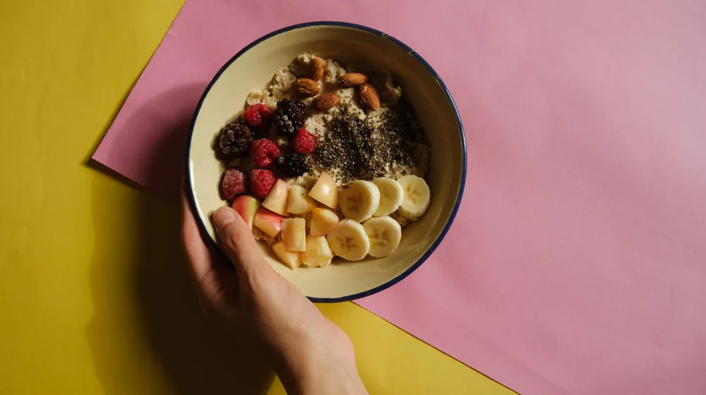

살 안찌는 다이어트 간식 고르는 법 5가지 체크리스트
사진: Antoni Shkraba / Pexels (무료 이미지, 출처 표기)
다이어트 간식, 왜 '무설탕' 문구만 믿으면 안 될까?

다이어트 중 참기 힘든 허기나 입심심함이 찾아올 때 간식을 무작정 참는 것은 폭식으로 이어지기 쉽습니다. 하지만 시중의 '무설탕'이나 '저칼로리' 타이틀을 단 제품을 무턱대고 골랐다가 다이어트를 망치는 경우도 많습니다.
실제로 표면적인 마케팅 문구 뒤에는 높은 지방 함량이나 과도한 대체당, 숨겨진 탄수화물이 포함되어 있을 수 있습니다. 이번 글에서는 영양성분표를 똑똑하게 읽고 나에게 맞는 진짜 다이어트 간식을 선택하는 기준을 정리해 드립니다.
성공적인 다이어트 간식 선택을 위한 4가지 핵심 체크리스트
간식을 고를 때는 브랜드나 포장지의 문구보다 뒷면의 영양성분표를 먼저 확인해야 합니다. 2026년 기준 식품의약품안전처의 영양성분 표시 기준을 바탕으로 다음 4가지 조건을 체크해 보세요.
- 당류 함량 5g 이하: 1회 제공량당 단순 당류는 5g 미만인 제품을 고르는 것이 혈당 급상승(혈당 스파이크)을 막는 데 유리합니다.
- 단백질 8~10g 이상: 포만감을 오랫동안 유지하려면 단백질 함량이 높은 제품이 좋습니다.
- 식이섬유 3g 이상: 식이섬유는 소화를 느리게 하고 장 건강을 돕기 때문에 간식의 영양 가치를 높여줍니다.
- 열량 100~150kcal 내외: 식사 사이에 먹는 간식은 하루 총 섭취 칼로리의 10%를 넘지 않도록 조정해야 합니다.
다이어트 대표 간식 영양 스펙 비교
자주 찾는 다이어트 간식들의 평균적인 영양성분과 특징을 정리했습니다. 제품의 상세 수치는 제조사에 따라 차이가 있을 수 있으므로 구매 전 포장지를 꼭 확인하시길 권장합니다.
편의점에서 쉽게 구하는 실속 다이어트 간식 추천
급하게 간식이 필요할 때 편의점이나 대형마트에서 실패 없이 고를 수 있는 식품들이 있습니다. 가장 대표적인 것이 조미되지 않은 견과류 소포장 제품과 스트링 치즈, 무당 두유입니다.
또한 그리스식 요거트(Greek Yogurt, 유청을 제거해 단백질 함량을 높인 농축 요거트)도 훌륭한 선택지입니다. 이때 설탕이나 과일 시럽이 첨가되지 않은 플레인 제품을 고르고, 견과류나 블루베리를 조금 첨가해 먹으면 영양 균형을 맞출 수 있습니다.
다이어트 간식 먹을 때 주의해야 할 3가지 함정
첫째, 당알코올(설탕 대신 단맛을 내는 대체당의 일종)이 과다 첨가된 제품은 장내 가스를 유발하거나 소화 불량을 일으킬 수 있습니다. 한 번에 너무 많은 양을 섭취하지 않도록 주의해야 합니다.
둘째, '말린 과일'이나 '과일 칩'은 수분이 빠져나가 당도가 응축되어 있으므로 칼로리와 당류가 생각보다 매우 높습니다. 다이어트 중에는 생과일을 적당량 섭취하는 것이 훨씬 좋습니다.
셋째, 건강한 간식이라도 양 조절에 실패하면 다이어트 목표 달성이 어려워집니다. 하루 간식 섭취 시간을 오후 3~4시경으로 정해두고, 1회 분량만 그릇에 담아 천천히 씹어 먹는 습관을 들여보세요.
🔗 이 글도 함께 보면 좋아요: 중고폰·노트북 살 때 돈 버리는 실수 피하는 5가지 필수 체크리스트
관련 추천 상품
이 포스팅은 쿠팡 파트너스 활동의 일환으로, 이에 따른 일정액의 수수료를 제공받습니다.
한눈에 보는 상품 목록
무염 볶음 아몬드 소포장
저당 고단백 프로틴바
무설탕 플레인 그릭요거트